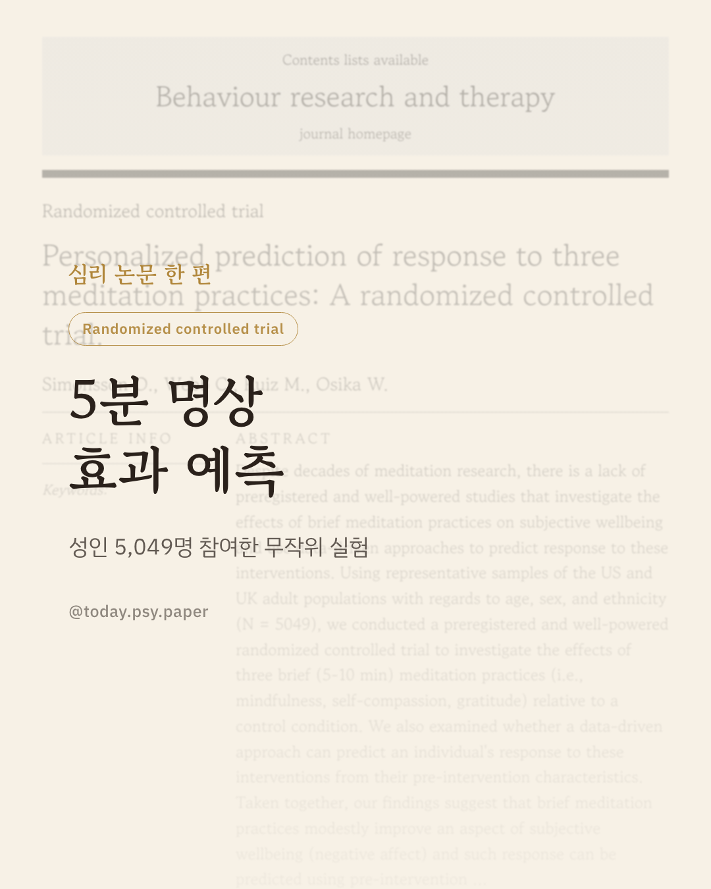
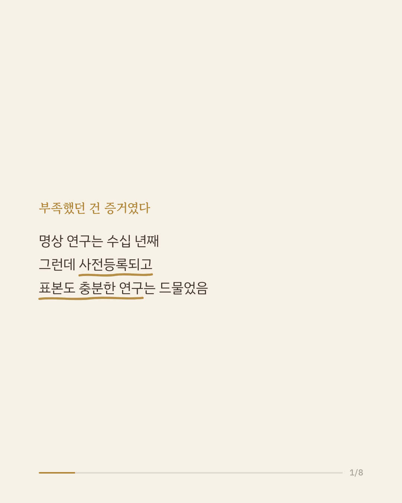
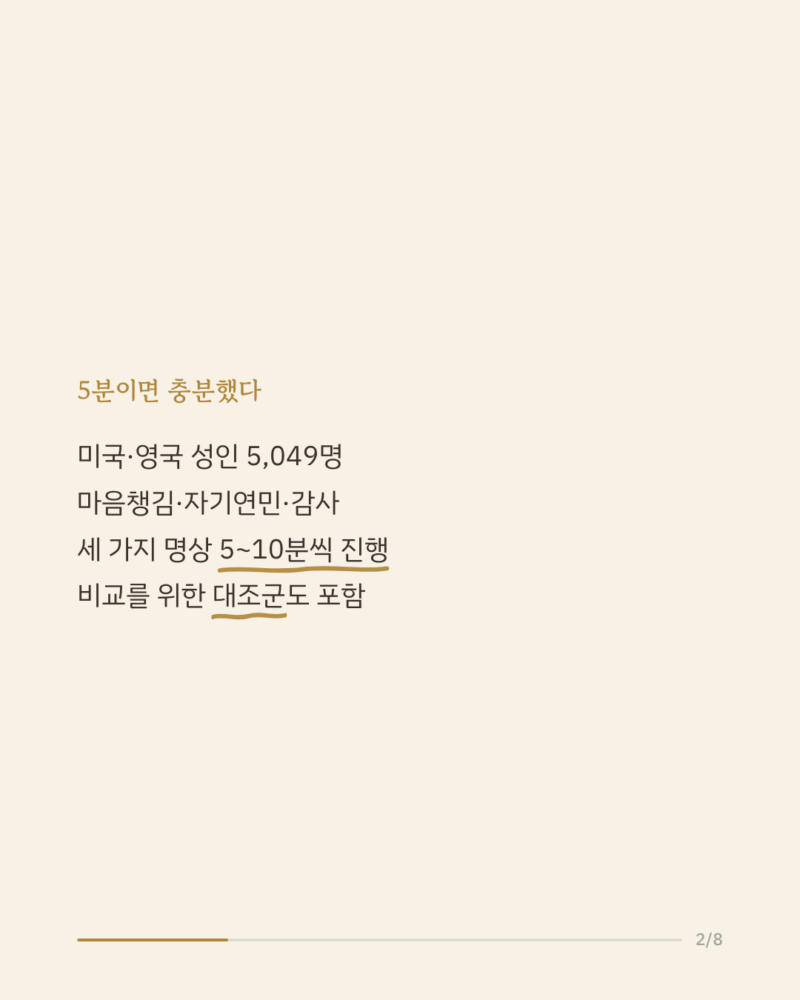
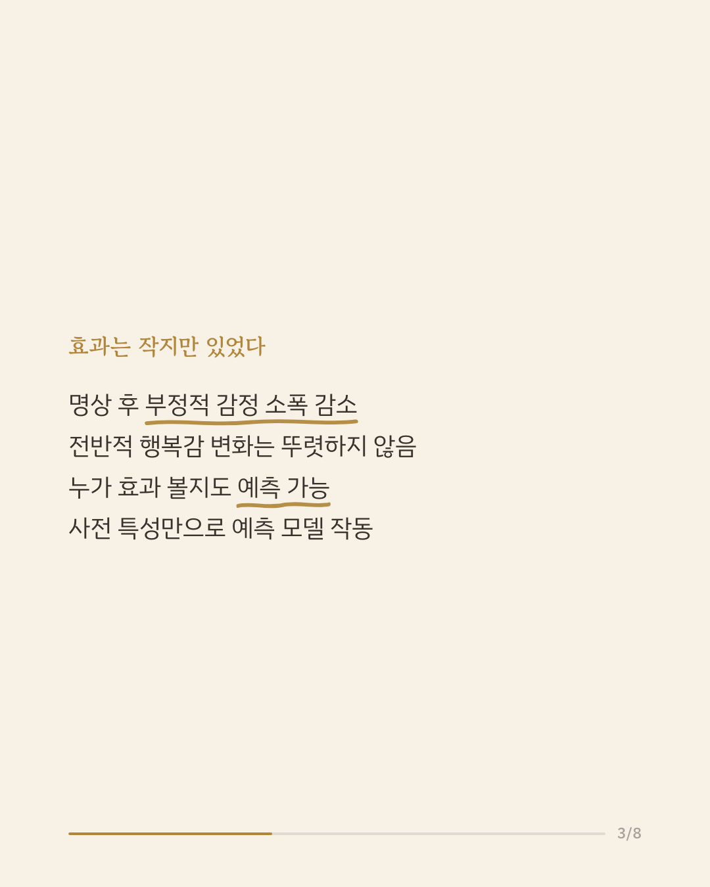
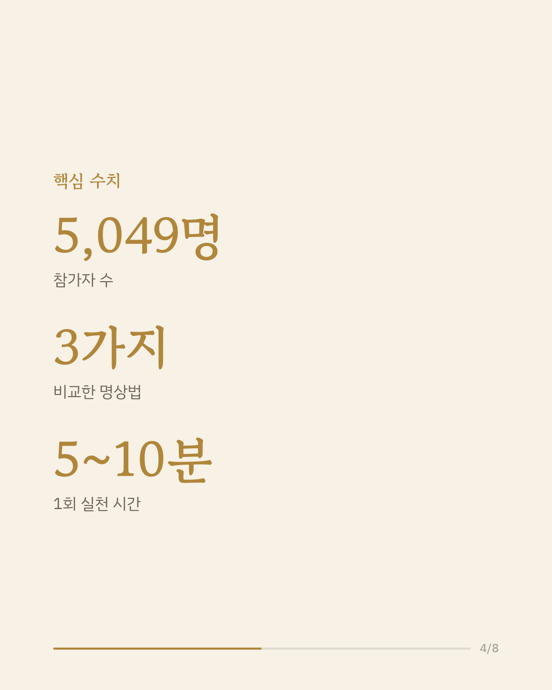
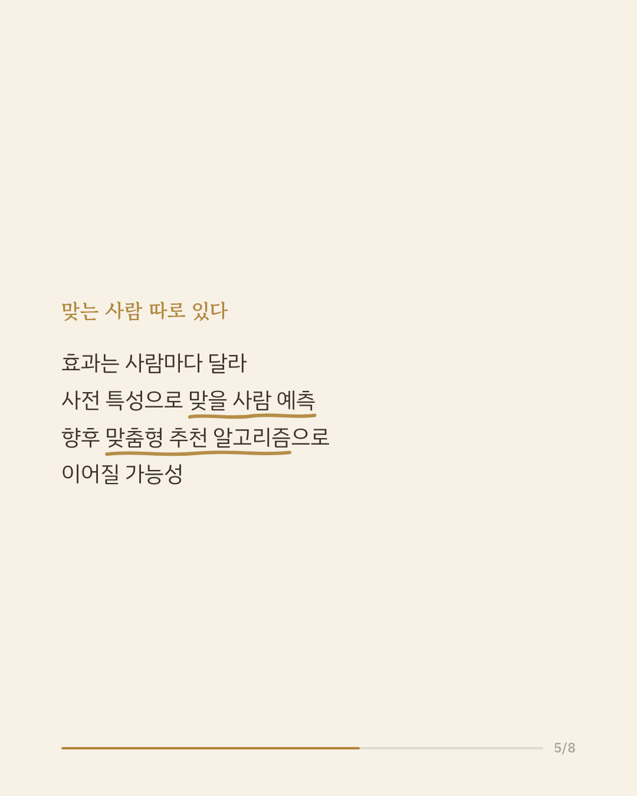
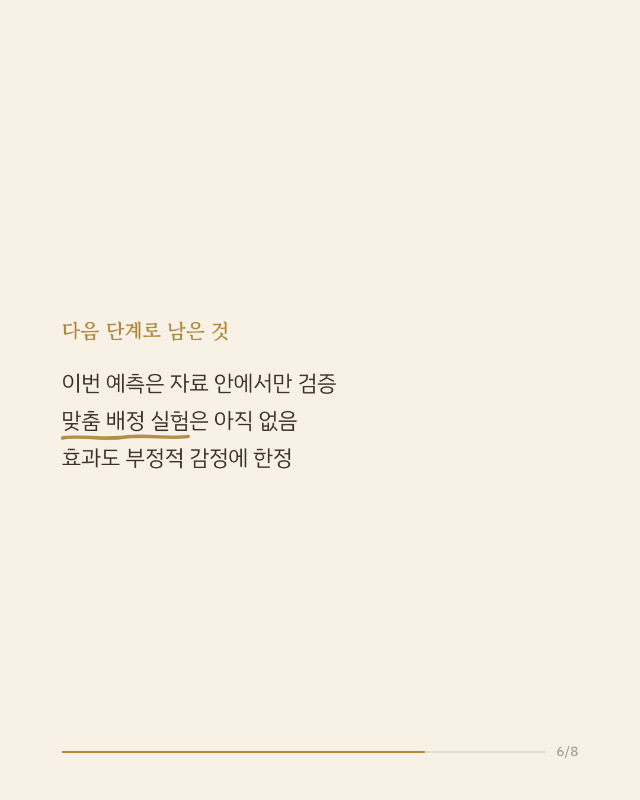
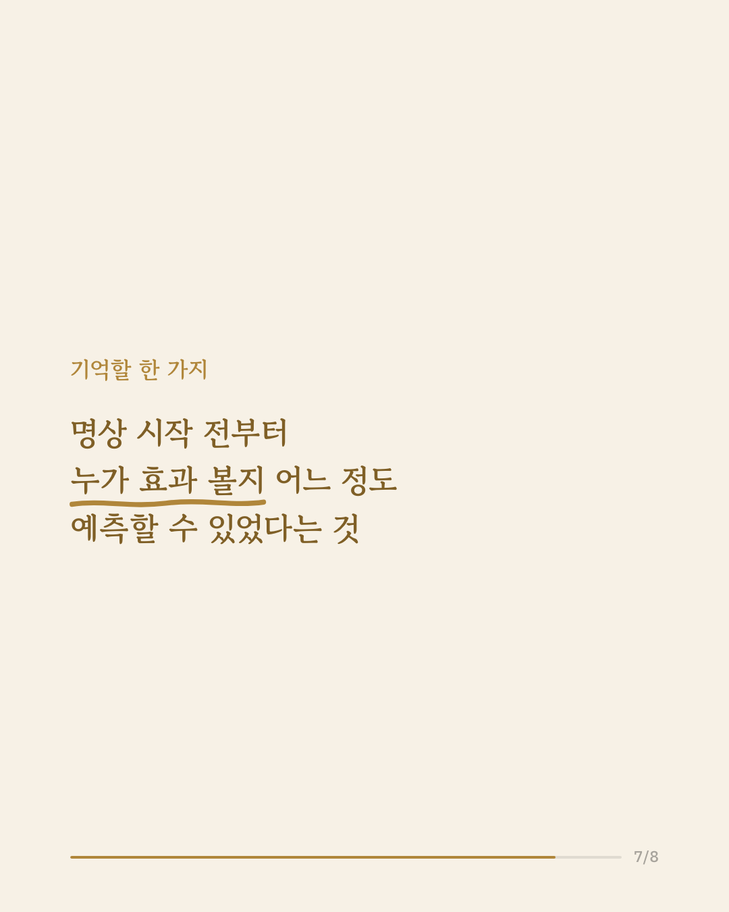
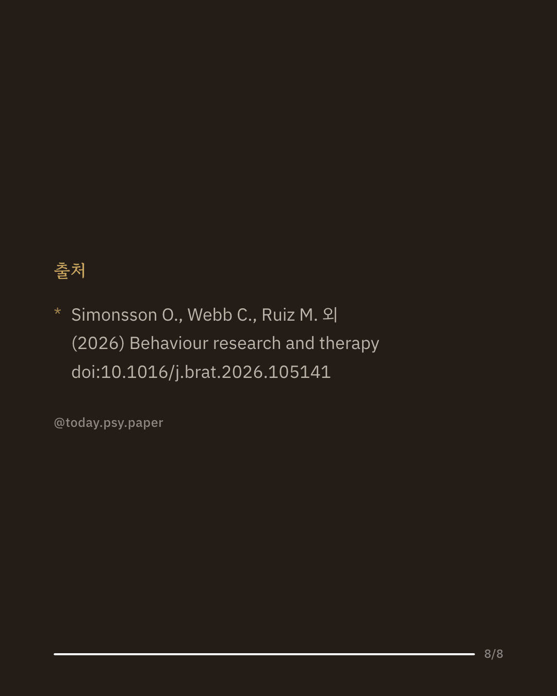

명상이 정신건강에 도움이 된다는 이야기, 한 번쯤 들어보셨을 겁니다. 하지만 정작 표본이 크고 사전등록된 연구는 많지 않았습니다. 연구팀은 미국과 영국 성인 5,049명을 모아 마음챙김, 자기연민, 감사 명상을 각각 5~10분씩 하게 하고 대조군과 비교했습니다. 그 결과 짧은 명상만으로도 부정적 감정이 소폭 줄어드는 것으로 나타났습니다. 전반적인 행복감 자체가 크게 달라지지는 않았습니다. 흥미로운 지점은 따로 있었습니다. 참가자가 명상을 시작하기 전 가진 특성만으로, 누가 효과를 볼지 어느 정도 예측할 수 있었다는 것입니다. 다만 이 예측 모델은 이번 자료 안에서 확인된 것으로, 실제로 사람마다 다른 명상을 배정해 효과를 검증한 실험은 아직 이루어지지 않았습니다. 출처: Behaviour Research and Therapy (2026), 'Personalized prediction of response to three meditation practices: A randomized controlled trial' #임상심리 #정신건강정보 #명상효과 #심리학연구 #웰빙심리
python3 publish.py 42585723